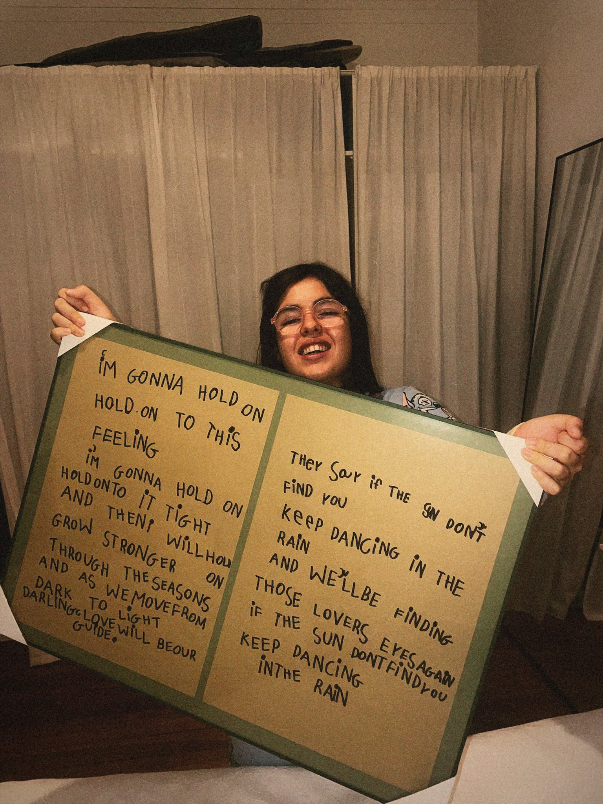

Luísa, 14 anos · com um dos seus quadrosA Luísa tem 14 anos e enche folhas com frases, letras de canções e o próprio nome, sempre com o acento bem à vista.
Começou em casa. Agora, cada frase vai para papel, é emoldurada e segue para a parede de alguém.
“Um diagnóstico é nome comum. Luísa é nome próprio.”Conceito de marca · Diogo Stilwell
Não é caligrafia de escola, nem letra de marca desenhada em laboratório. É a letra da Luísa: viva, inequívoca, dela.
Esta marca não nasceu para explicar um diagnóstico, nem para pedir nada a ninguém.
Nasceu porque essa letra, e a forma como a Luísa habita o mundo, tem uma beleza que as pessoas querem ter perto.
Numa parede. Numa frase que importa. Num objecto que se escolhe porque se deseja, não porque se deve.
O tempo faz parte da peça.
Aqui, tudo anda ao ritmo da Luísa.* Avisa-se antes, mostram-se os passos por ordem e espera-se que ela venha. Forçar é bloquear; esperar é o que a deixa ir mais longe. Por isso cada quadro demora o que tem de demorar. A espera não é um atraso. É a maneira como a peça se faz.
É a Luísa que pede para vir para a mesa. Escolhe a frase, pega na caneta, e pode sempre dizer que não. Ninguém lhe pede pressa. A letra é dela. O nome também.
* A Luísa tem uma alteração rara no gene STXBP1. Não é o assunto desta marca, mas faz parte de quem ela é: é também por isso que, aqui, o ritmo é o dela.